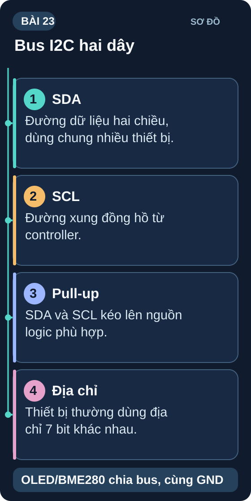
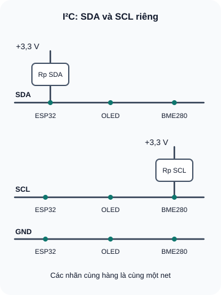
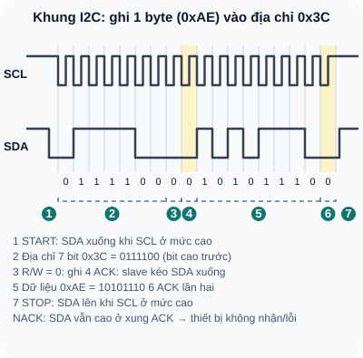

I2C — Giao Tiếp Đa Thiết Bị Trên 2 Dây
Inter-Integrated Circuit — giao tiếp đồng bộ trên hai dây SDA/SCL; số thiết bị phụ thuộc địa chỉ khả dụng và tải bus.
- Hiểu I2C là giao tiếp đồng bộ Master-Slave với 2 dây SDA/SCL
- Hiểu địa chỉ 7-bit I2C và cách nhiều thiết bị dùng chung bus
- Hiểu tại sao I2C cần điện trở pull-up và cách chọn giá trị
- Phân biệt I2C 100kHz (Standard), 400kHz (Fast) và 3,4MHz (High-speed)
- Dùng I2C Scanner để tìm địa chỉ thiết bị trên bus
- Đọc cảm biến BME280 (nhiệt độ/độ ẩm/áp suất) qua I2C
- Điều khiển màn hình OLED SSD1306 0,96" qua I2C
- Debug I2C: thiết bị không phản hồi, địa chỉ sai, pull-up thiếu

Dụng cụ
| Tên | Thông số | SL |
|---|---|---|
| Host logic 3,3 V (ví dụ ESP32-WROOM-32) | Ví dụ chân GPIO21=SDA, GPIO22=SCL; xác nhận chân trên đúng board. Uno R3 logic 5 V cần breakout chịu 5 V hoặc bộ chuyển mức I²C hai chiều đã kiểm. | 1 |
| Màn hình OLED SSD1306 0,96" | 128×64 pixel, I2C, địa chỉ 0x3C hoặc 0x3D | 1 |
| Cảm biến BME280 hoặc SHT31 | Nhiệt độ/độ ẩm; BME280: 0x76/0x77, SHT31: 0x44/0x45. Kiểm địa chỉ và điện áp của breakout cụ thể. | 1 |
| Điện trở kéo lên (ví dụ 4,7 kΩ) | Chỉ thêm nếu tính R tổng, C bus và dòng LOW cho thấy cần; nhiều breakout đã lắp sẵn. | Tùy mạch |
| Breadboard + dây jumper | — | 1 bộ |
1. I2C — Hai dây, nhiều thiết bị
I2C (Inter-Integrated Circuit, viết tắt từ I²C, đọc là "I-squared-C") là giao thức truyền thông nối tiếp đồng bộ được phát minh bởi Philips (nay là NXP) năm 1982. Chỉ cần 2 dây:
- SDA (Serial Data): dây dữ liệu 2 chiều
- SCL (Serial Clock): clock do Master tạo ra
Mỗi thiết bị trên cùng bus cần địa chỉ 7-bit không trùng. Trong 128 mã 7-bit, NXP dành riêng hai dải 0x00–0x07 và 0x78–0x7F; 112 địa chỉ còn lại là dải thiết bị thông thường. Số thiết bị thực tế thấp hơn vì địa chỉ cố định, điện dung bus, điện trở kéo lên và nguồn. Xem NXP UM10204 Rev. 7, §3.1.12 và §7.1.

Bản chữ của sơ đồ
ESP32, OLED và BME280 cùng nối SDA và SCL thành hai net riêng, chung GND. SDA qua một điện trở pull-up tương đương về Vlogic 3,3 V; SCL qua điện trở pull-up khác về 3,3 V. 4,7 kΩ là giá trị minh họa, phải xét điện trở đã có trên module, điện dung bus và khả năng kéo xuống. Module phải thật sự tương thích mức 3,3 V.
1.1 Tại sao cần pull-up resistor?
I2C dùng kiến trúc open-drain (open-collector): các thiết bị chỉ có thể kéo dây xuống GND (LOW), không thể đẩy lên VCC (HIGH). Điện trở pull-up kéo dây lên VCC khi không ai kéo xuống. Nếu thiếu pull-up, dây không thể đạt mức HIGH → I2C không hoạt động.
| Tốc độ I2C | R_pullup khuyến nghị | Lưu ý |
|---|---|---|
| 100 kHz (Standard) | 4,7kΩ–10kΩ | Phổ biến nhất, hầu hết module cảm biến |
| 400 kHz (Fast) | 2,2kΩ–4,7kΩ | Pull-up nhỏ hơn để rising edge nhanh hơn |
| 1 MHz (Fast+) | 1kΩ–2,2kΩ | PCB thiết kế cẩn thận |
Một số module OLED, BME280 hoặc MPU6050 đã có pull-up trên PCB; giá trị và rail kéo lên tùy phiên bản. Trước khi thêm điện trở ngoài, xem schematic module hoặc đo điện trở khi đã tắt nguồn. Ba điện trở 4,7 kΩ song song chỉ còn khoảng 1,57 kΩ; kiểm dòng LOW, thời gian lên và điện dung bus theo thông số các thiết bị.
2. Cấu trúc giao dịch I2C

Đọc mô tả D23-2
Điều kiện START: SDA xuống khi SCL cao. Sau đó 7 bit địa chỉ 0x3C là 0111100, bit R/W bằng 0 là ghi, slave kéo SDA xuống ở xung ACK, tiếp theo 8 bit dữ liệu 0xAE là 10101110 và ACK thứ hai. Điều kiện STOP: SDA lên khi SCL cao.
3. I2C Scanner — Tìm địa chỉ thiết bị
// I2C Scanner — Tìm tất cả thiết bị trên bus
#include <Wire.h>
void setup() {
Wire.begin();
Serial.begin(115200);
Serial.println("I2C Scanner started...");
for (byte addr = 0x08; addr <= 0x77; addr++) { // bỏ dải địa chỉ dành riêng
Wire.beginTransmission(addr);
byte error = Wire.endTransmission();
if (error == 0) {
Serial.print("Thiet bi tim thay tai dia chi: 0x");
if (addr < 16) Serial.print("0");
Serial.println(addr, HEX);
}
}
Serial.println("Xong.");
}
void loop() {}
| Module | Địa chỉ mặc định | Ghi chú |
|---|---|---|
| OLED SSD1306 | 0x3C hoặc 0x3D | Địa chỉ và cách chọn phụ thuộc breakout/jumper; dùng scanner và sơ đồ đúng module. |
| BME280 | 0x76 hoặc 0x77 | Chân SDO quyết định (GND=0x76, VCC=0x77) |
| MPU-6050 (IMU) | 0x68 hoặc 0x69 | Chân AD0 quyết định |
| ADS1115 (ADC) | 0x48–0x4B | ADDR nối GND/VCC/SDA/SCL = 4 địa chỉ |
| PCF8574 (I/O Expander) | 0x20–0x27 | 8 địa chỉ qua A0/A1/A2 |
4. Thực hành: OLED + BME280 trên I2C
Cài thư viện:
Adafruit SSD1306,Adafruit GFX,Adafruit BME280qua Library Manager.Trước tiên vẽ hoặc mô phỏng hai net SDA/SCL kéo lên 3,3 V, với OLED và BME280 cùng GND. Chỉ lắp thật khi có mã/revision của từng breakout, xác nhận VCC, VDDIO, rail pull-up và pinout. Với host logic 3,3 V đã xác minh, nối SDA/SCL theo chân board. Không nối trực tiếp Uno R3 logic 5 V với chip BME280 trần hoặc breakout 3,3 V chưa có chuyển mức; nếu dùng Uno, chọn breakout được nhà sản xuất xác nhận chịu I²C 5 V hoặc bộ chuyển mức I²C hai chiều phù hợp. Uno R3; Bosch BME280, VDDIO tối đa 3,6 V.
Sau khi cổng điện áp và module ở bước trên đạt, chạy I2C Scanner → tìm địa chỉ OLED và BME280. Ghi lại; địa chỉ SHT31 thay thế là 0x44/0x45 theo Sensirion SHT3x-DIS, bảng địa chỉ.
Sau khi mạch thật đã qua cổng trên, upload code đọc BME280 và in nhiệt độ qua Serial; so với nhiệt kế tham chiếu, không mặc định nhiệt độ môi trường 25–35 °C. Ở nhánh mô phỏng, kiểm luồng dữ liệu giả định và xử lý sensor không phản hồi.
Thêm code hiển thị nhiệt độ lên OLED 0,96"; với dữ liệu thử 27,3 °C, kỳ vọng text "Temp: 27.3 C". Việc màn hình thật hoạt động còn phụ thuộc địa chỉ, nguồn và module đã xác minh.
5. Debug I2C phổ biến
| Lỗi | Nguyên nhân | Cách kiểm tra | Fix |
|---|---|---|---|
| I2C Scanner không tìm thấy thiết bị (0 devices) | Có thể thiếu pull-up, sai chân, sai nguồn/mức logic hoặc địa chỉ | Đo SDA/SCL khi bus rỗi, xác nhận điện áp theo datasheet của từng thiết bị và R kéo lên tổng. | Sửa chân/nguồn trước; chỉ thêm pull-up lên đúng rail logic sau khi tính R tổng và dòng LOW theo NXP UM10204 §7.1. |
| Địa chỉ bất thường hoặc ACK không ổn định | Có thể sai địa chỉ, nguồn, pull-up, điện dung dây hoặc nhiễu | Đối chiếu datasheet/module, đo rail và dạng sóng SDA/SCL; kiểm điện trở tương đương khi tắt nguồn. | Sửa nguyên nhân đã đo; không thay điện trở bằng 4,7 kΩ theo phỏng đoán. |
| OLED không hiển thị dù Scanner thấy | Địa chỉ trong code sai | So sánh địa chỉ Scanner với địa chỉ trong Adafruit_SSD1306 constructor | Sửa địa chỉ: display(128, 64, &Wire, -1) rồi display.begin(SSD1306_SWITCHCAPVCC, 0x3C) |
| BME280 đọc 0 hoặc -999 | Thư viện không tìm thấy sensor | Kiểm tra bme.begin() trả về false → Serial.println | Kiểm tra địa chỉ 0x76 vs 0x77, SDA/SCL đúng chân |
1: Năm điện trở 10 kΩ song song cho R tương đương 2 kΩ. R thấp làm cạnh lên nhanh hơn với cùng điện dung, nhưng tăng dòng mà thiết bị phải kéo xuống khi LOW; dây 1 m lại tăng điện dung và có thể làm cạnh lên chậm. Theo NXP UM10204 Rev. 7, §7.1, kiểm cả R tối thiểu theo dòng sink, R tối đa theo C bus và thời gian lên; không quyết định tháo pull-up nếu chưa đo và tính.
2: Địa chỉ 7-bit có 128 mã, trong đó 16 mã thuộc hai dải dành riêng theo NXP UM10204 Rev. 7, bảng 4; còn 112 địa chỉ thông thường, không có nghĩa là gắn được 112 module thật. Nếu hai target cùng địa chỉ, cả hai có thể ACK và cùng tham gia truyền, khiến dữ liệu không xác định; chọn địa chỉ khác, bus thứ hai hoặc multiplexer.
3: BME280 chỉ có 2 địa chỉ (0x76, 0x77) → không đủ cho 3 module. Giải pháp: (a) Dùng I2C Multiplexer TCA9548A — 8 kênh I2C độc lập, mỗi kênh 1 địa chỉ; (b) Dùng 2 BME280 trên I2C + 1 BME280 trên bus I2C thứ 2 (ESP32 có 2 I2C hardware); (c) Dùng SPI cho một số module.